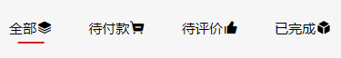
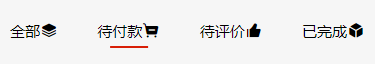
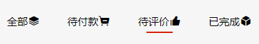
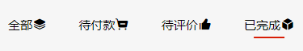
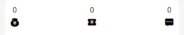
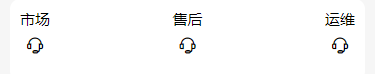

properties: {
tips: {
type: String,
value: '我是有底线的'
}
}
<view class="deadline">- {{tips}} -</view>
properties: {
icon: {
type: String,
value: 'icon-cart-empty'
},
title: {
type: String,
value: '购物车'
}
}
<view class="empty-com">
<text class="iconfont {{icon}}"></text>
<text>{{title}}空空的，去逛逛吧</text>
</view>
@import '../../utils/iconfont.wxss';
properties: {
product: Object
}
<view class="product">
<view class="img-wrap">
<image src="{{product.imageThumb}}" mode="aspectFit" />
</view>
<view class="info">
<view class="title">{{product.title}}</view>
<view class="item">￥<text class="price">{{product.price}}</text> 销量{{product.sold}}</view>
<slot name="extra"></slot>
</view>
<slot></slot>
</view>




lists: {
type: Array,
value: []
}
ind: 0
selTab(e) {
const ind = e.currentTarget.dataset.ind
this.setData({
ind
})
this.triggerEvent('tabTap', ind)
}
<view class="tab-card card-item">
<view class="tab-item {{ind==index?'active':''}}" wx:for="{{lists}}" wx:key="id" data-ind='{{index}}' bind:tap="doTab">
<text>{{item.label}}</text>
<text class="iconfont {{item.icon}}"></text>
</view>
</view>
@import '../../app.wxss';
// 调整部分样式
.card-item {
padding: var(--p-m-g);
}
// 新样式
.tab-item {
position: relative;
line-height: 2;
}
.tab-item.active::before {
content: '';
position: absolute;
left: 50%;
bottom: 0;
width: 60%;
height: 4rpx;
transform: translateX(-50%);
background-color: var(--main-color);
}
<view class="tabcard">
<tabCard lists='{{tabs}}' bind:tabTap='onSel'></tabCard>
</view>
onSel(e) {
let cur = e.detail
// switch - case
}
.tabcard {
position: sticky;
top: 0;
z-index: 1;
}

